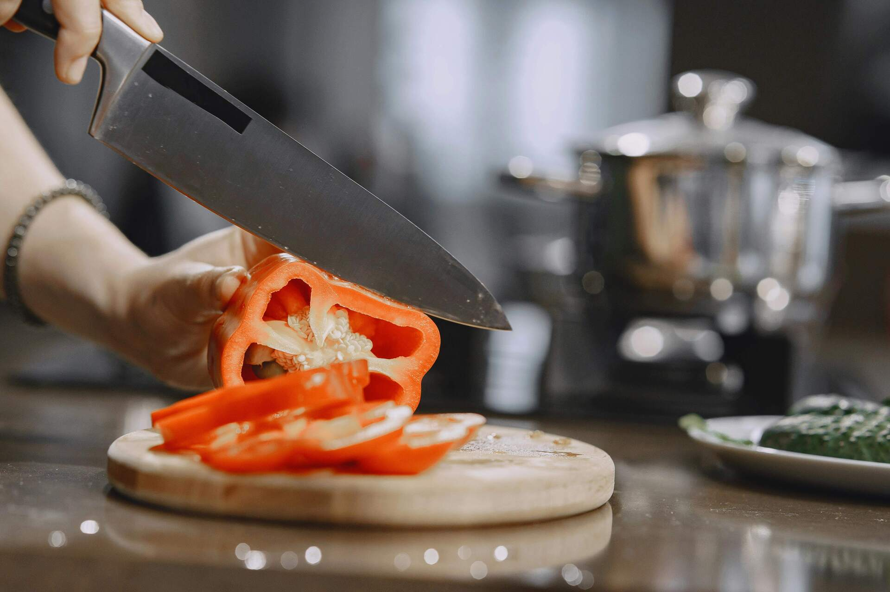

Recomendaciones para una Cocina Vegana
Consejos prácticos para mejorar tu experiencia culinaria vegana.
Consejos Útiles
Elige Ingredientes Frescos
Opta por verduras y frutas frescas para asegurar el mejor sabor y valor nutricional en tus recetas.

Aprende Técnicas de Cocina
Domina técnicas básicas como saltear, asar y cocinar al vapor para preparar platos veganos deliciosos.
Herramientas Esenciales
- Sartenes antiadherentes
- Cuchillos de calidad
- Básculas de cocina
- Batidora de mano